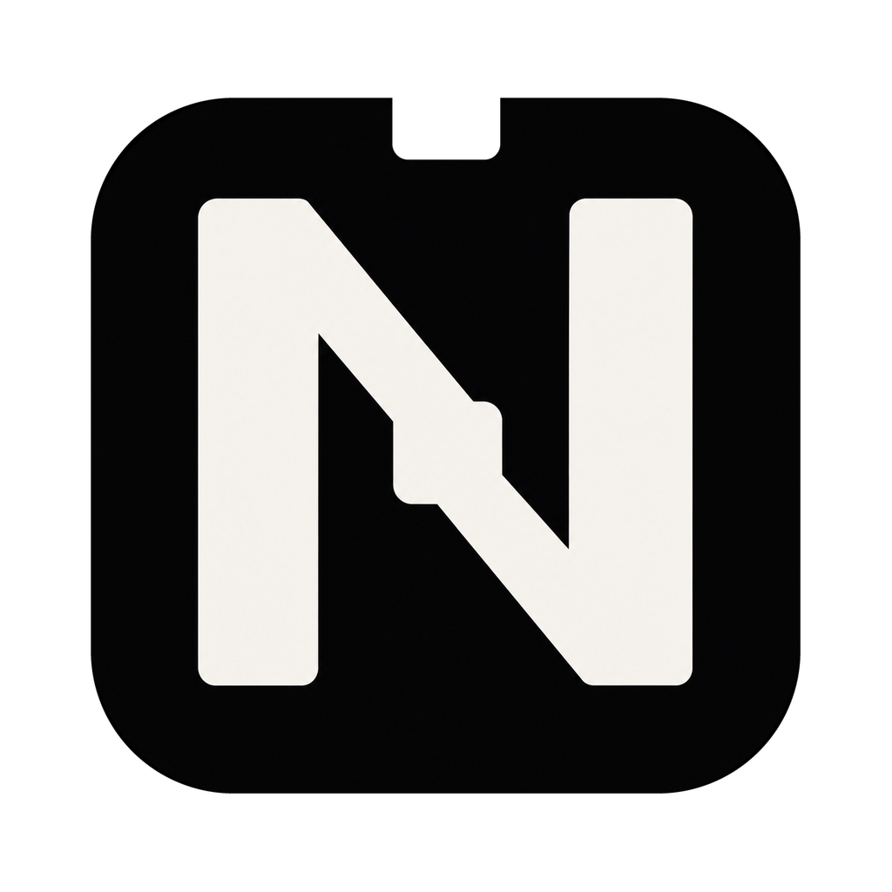
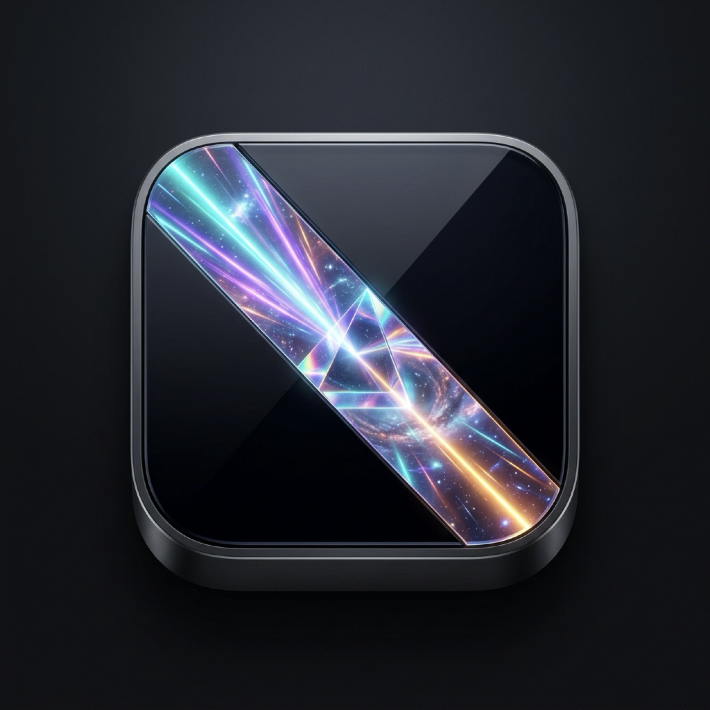
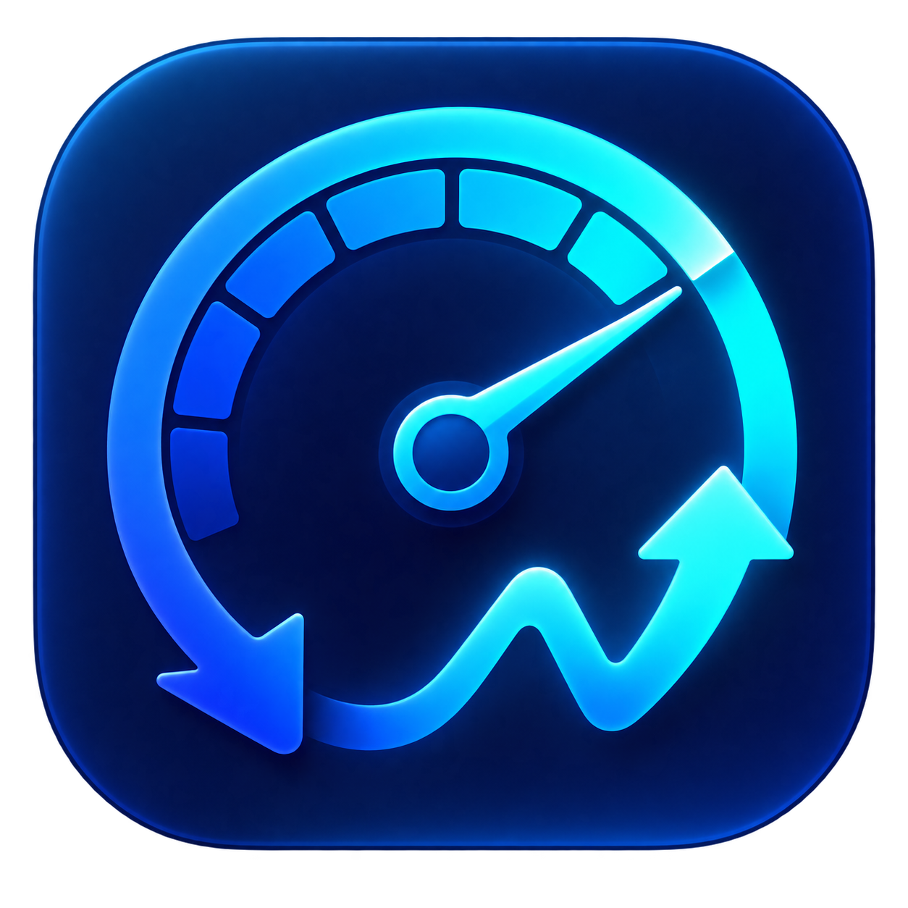
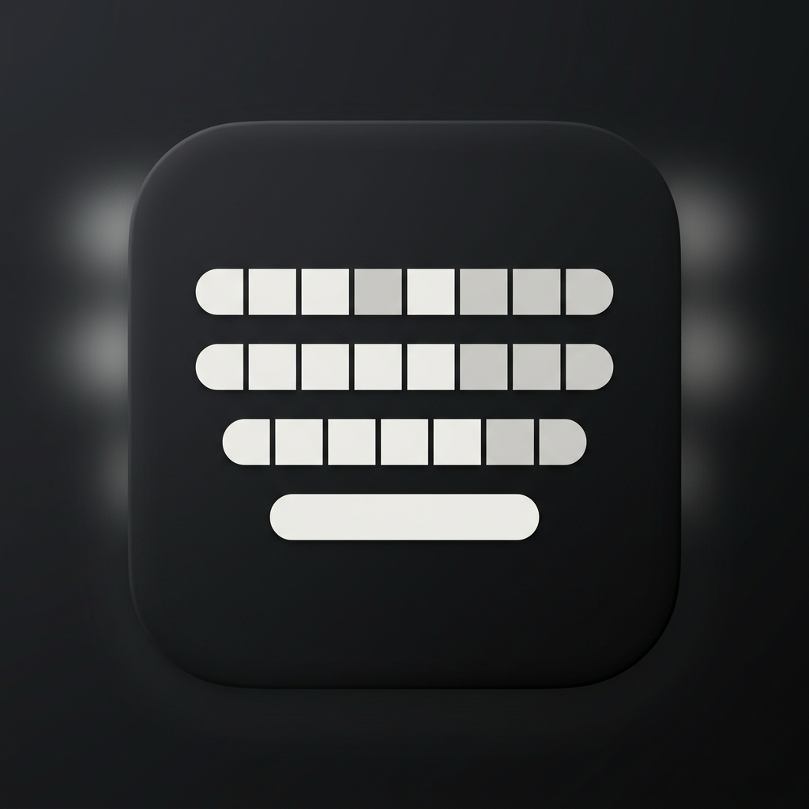

A SMALL ADVENTURE THROUGH A YEAR OF BUILDING
Even the quiet days
have a little life.
Meet my mini self. Roll the dice, wind through the empty
squares, and find your way across my GitHub year.
 PLAYER 01 SRIJAN
PLAYER 01 SRIJAN01 / THE CONTRIBUTION TRAIL
Quiet Days Quest
Loading the calendar…
Visit every quiet square to finish. Blue squares are passed over.
THE WORKSHOP / SELECTED WORK
Things I wanted to exist.

Native macOS↗NotchHub
The MacBook notch, put to work.
Native desktop engineering
macOS + Windows↗Wallps
Give the desktop a little life.
Cross-platform release
Swift · macOS↗Internet Speed Reader
Know what your connection is doing.
Everyday utilityMuse Codex
A new model connection. The same tools.
Runtime integrationLifeOS Inbox
An inbox an agent can reason about.
Agent-first architecture
Swift · iOS↗The Keyboard Project
The Android typing feel, on iPhone.
Native mobile engineering

02 / THE RHYTHM
Small steps. Real progress.
A calendar records contributions, not a whole life. Empty squares can mean studying, resting, or building offline.
Read the contribution data
03 / BACK TO BUILDING
Made out of curiosity.
I’m Srijan, a developer and student in India. I build native apps and the agent tooling that helps me make them.
Explore the workshop ↗Say hello ↗